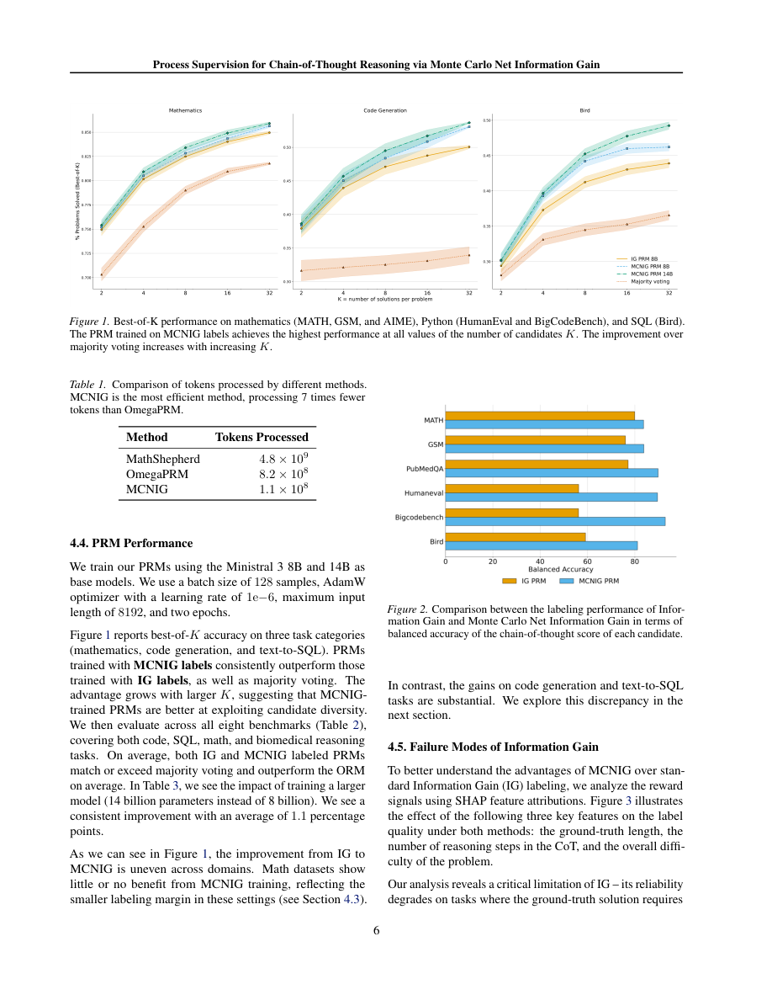

#1
★ 9/10
Process Supervision for Chain-of-Thought Reasoning via Monte Carlo Net Information Gain
基于蒙特卡洛净信息增益的思维链推理过程监督

图 Figure · Page 6 of paper
🎯 用信息论自动生成推理步骤质量标签，高效监督大模型思维链
Information-theoretic step-level labels enable scalable, efficient supervision of LLM chain-of-thought reasoning.
❓ Problem · 解决什么问题
大型语言模型在进行多步推理时，中间步骤的错误会像"滚雪球"一样不断传播，最终导致错误答案。现有的"过程奖励模型"（PRM）虽然可以逐步打分来纠错，但训练这类模型要么依赖昂贵的人工标注，要么需要大量计算资源，难以大规模推广。
Large language models performing multi-step reasoning are vulnerable to cascading errors, where a mistake in one intermediate step corrupts all subsequent steps. Existing process reward models (PRMs) that score each step individually require either expensive human annotations or computationally intensive automatic labeling methods, making scalable training difficult.
⚙️ Method · 方法
本文提出用信息论中的"净信息增益"来衡量每个推理步骤的质量：若一个步骤让模型更接近正确答案，则该步骤获得正向标签，反之则获得负向标签。具体通过蒙特卡洛采样估算每步对正确答案概率的影响，无需人工介入即可自动生成步骤级标签。关键创新在于将算法复杂度从此前方法的 O(N log N) 降低至 O(N)，大幅提升了计算效率，使其更适合大规模应用。
The method assigns a quality signal to each reasoning step by estimating how much that step increases or decreases the likelihood of producing the correct final answer, using an Information Theory concept called Net Information Gain. Monte Carlo sampling is used to approximate this signal automatically, without any human annotation. This reformulation reduces the computational complexity from O(N log N) to O(N), making the labeling process significantly more efficient and scalable for large datasets and diverse tasks.
📐 Key Formulas · 关键公式
\[\text{NIG}(s_i) = \log P(a^* \mid s_1, \ldots, s_i) - \log P(a^* \mid s_1, \ldots, s_{i-1})\]
💡 净信息增益（NIG）：衡量第 i 个推理步骤相对于前一步骤，使正确答案概率变化了多少（对数尺度）。若值为正，说明该步骤有益；若为负，说明该步骤有害。
Net Information Gain (NIG): measures how much step i changes the log-probability of the correct answer compared to the previous step. A positive value means the step helps; a negative value means it hurts.
\[\text{Complexity: } \mathcal{O}(N) \text{ vs. previous } \mathcal{O}(N \log N)\]
💡 本方法将自动标注的计算复杂度从 O(N log N) 降至 O(N)，意味着随着推理步骤数量增加，计算量的增长更为平缓，可扩展性更强。
The proposed method reduces the computational complexity of automatic step labeling from O(N log N) to O(N), meaning the cost grows linearly rather than super-linearly with the number of reasoning steps.
📊 Results · 结果
该方法在多个推理基准测试中验证了有效性，涵盖数学、Python编程、SQL查询和科学问答等多种任务类型。在"最优K选一"（best-of-K）评估设置下，基于本方法生成的标签训练的PRM能够有效筛选出质量更高的思维链，整体性能优于基线方法，同时计算开销显著降低（复杂度从 O(N log N) 降至 O(N)）。
The proposed method was validated across diverse reasoning benchmarks including mathematics, Python programming, SQL, and scientific question answering. In best-of-K evaluation settings, PRMs trained with the automatically generated Information Gain labels consistently outperformed baseline methods in selecting high-quality chain-of-thought reasoning paths. The approach also achieved a concrete reduction in computational complexity from O(N log N) to O(N), representing a significant efficiency improvement over prior automatic labeling methods.
🌟 Why It Matters · 为什么重要
过程监督是提升大模型推理可靠性的关键技术，但高昂的标注成本一直是瓶颈。本文将信息论引入过程奖励模型的自动标注，在降低成本的同时兼顾了跨领域的泛化能力，为构建更可靠的推理型AI系统提供了实用路径。
Process supervision is a critical technique for building reliable LLM reasoning systems, but annotation costs have been a major bottleneck to scaling. This work demonstrates that information-theoretic signals can replace expensive labeling pipelines while generalizing across diverse task domains, paving the way for more trustworthy and efficient AI reasoning at scale.